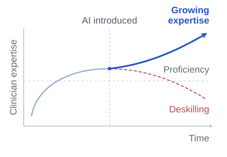

Clinical AI safety
Building on SA-ROC, I study how guidance about the scope of AI support and the need for review affects radiologists’ decisions.
Safer clinical AI should support diagnosis while minimizing deskilling, the loss of existing expertise, and misskilling, the acquisition of incorrect diagnostic reasoning patterns. I plan large-scale prospective studies to evaluate decisions made with AI and clinicians’ ability to recognize errors and judge independently without AI after repeated use. I also plan to extend this work to diagnostic support based on large language models (LLMs), establishing design and use principles that preserve clinical expertise and help clinicians critically assess AI advice.
